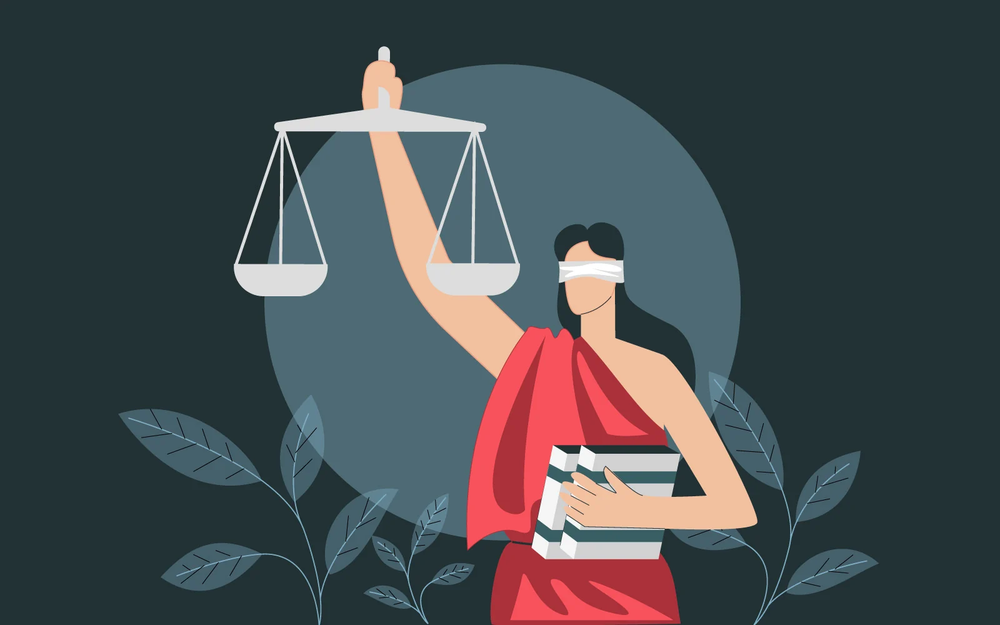

Le changement commence par nous.
Chaque geste de solidarité peut contribuer à créer un environnement plus sûr et plus respectueux.
Comment pouvons-nous agir?
Ensemble,adoptons des actions concrètes pour mettre fin aux violences.
Sensibiliser
Partager des informations fiables.
Ecouter et soutenir
Etre là,sans juger.
Orienter vers l'aide
Accompagner vers des services.
Agir en ligne
Promouvoir le respect sur internet.
Les 4 étapes du soutien
Ecouter:Laisser la personne parler.
Croire et rassurer:Lui rappeler qu'elle n'est pas seule.
Respecter ses choix:Ne pas la forcer.
Orienter vers une aide:Associer à des services.
Tu n'es pas seule,ensemble on est plus forts.
Je m'engage pour un monde sans violence.
Choisis les actions que tu souhaites adopter:
Je respecte les limites et le consentement
Je soutiens les victimes
Je partage des messages positifs

Tu n'es pas seule
Si tu es concernée par une situation de violence,trouve de l'aide et un accompagnement adapté.